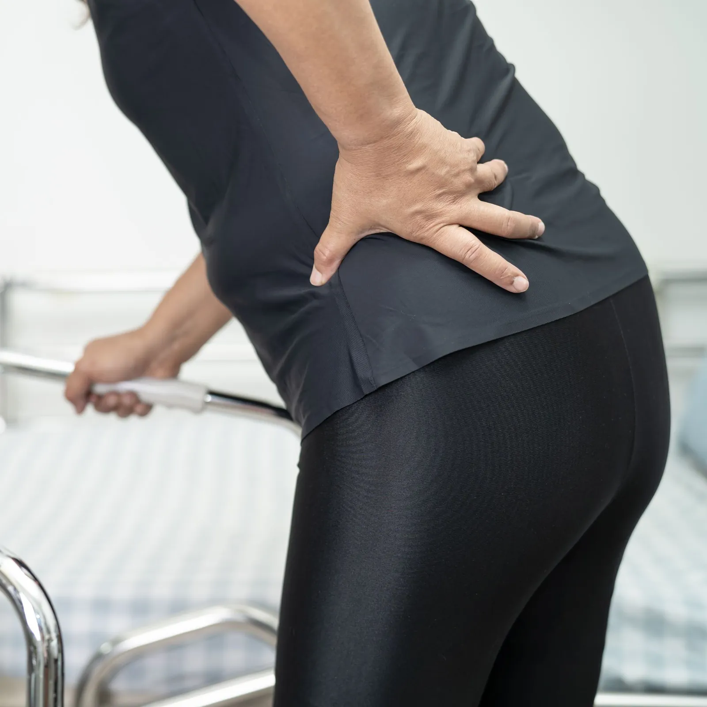
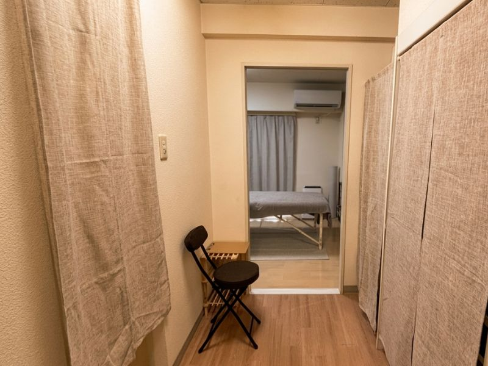
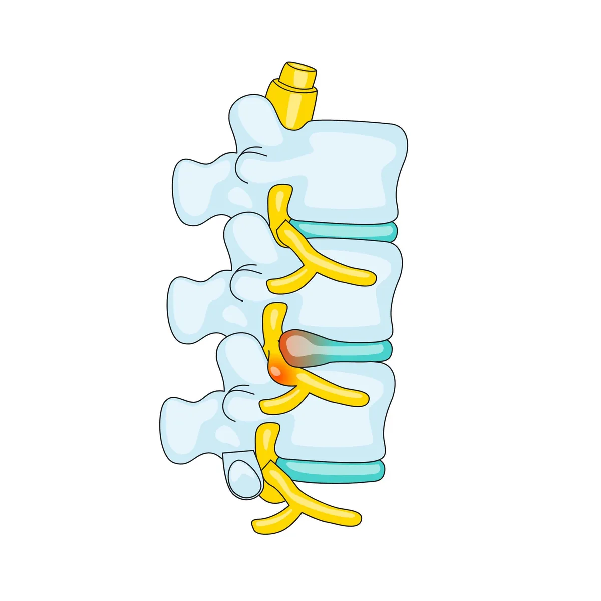

歩きにくさや腰脚の負担を整理します
歩ける距離やつらくなるタイミングを確認しながら、今の状態に合わせて無理のない進め方を考えます。
「少し歩くと足がしびれて止まってしまう」——
今の状態を丁寧に確認しながら、歩ける距離や日常の不安を少しずつ減らしていく方法を一緒に考えます。
しばらく歩くと足がしびれて、立ち止まらないといけない
前かがみになると楽になる（カートを押すと楽など）
長時間立っていると腰からお尻にかけてだるくなる
手術を勧められたが、できれば避けたい
歩ける距離がどんどん短くなっている気がする

歩ける距離やつらくなるタイミングを確認しながら、今の状態に合わせて無理のない進め方を考えます。

歩行時の変化や休むと楽になるかなどを確認しながら、必要に応じて医療機関との使い分けもお伝えします。

症状が長引いて不安を感じる方にも、あわてず整理してお話しいただけるよう落ち着いた環境を大切にしています。
脊柱管狭窄症では、腰が反りやすい状態や股関節・胸椎の硬さが重なることで、神経まわりの負担が強くなることがあります。
また、足先の使いにくさや体幹の不安定さがあると、歩くたびに腰へ負担が集まりやすくなります。当院では、その積み重なった負担を一つずつ整理していきます。

腰が反りすぎるメカニズム
股関節・胸椎が硬くなって可動域が低下
体を起こす動きを腰椎が代わりに担う
腹部インナーマッスルがサボり筋化して体幹が不安定
腰椎が過度に反り脊柱管が圧迫される
「歩けなくなる」負の連鎖
✦ ポイント
状態に合わせて安全な範囲で体を動かし続けることは、歩きやすさを保つうえで大切です。不安が強くなる前に、今できることを整理していくことが重要です。
股関節や胸椎の動きを整え、体幹を安定させ、歩き方の負担を少しずつ減らしていく3ステップで改善を目指します
腰が反りすぎる原因となっている股関節・胸椎のガンバリ筋（大腿直筋・腸脛靭帯など）を手技でほぐし、「腰の代わりに動ける関節」を取り戻します。足趾のサボり筋へのアプローチも合わせて行います。
サボっていた腹筋群（特に腹横筋などのインナーマッスル）を正しく使えるようにし、腰椎が過度に反らないよう体幹の安定性を作ります。仰向けや四つ這いなど安全な姿勢から始めます。
小さな成功体験を積み重ねることを大切にしています。歩行フォームや途中で休む際の姿勢のコツもお伝えし、日常の中で「歩く自信」を取り戻していただきます。
最初の1〜2ヶ月は週1〜2回のペースをおすすめしています。歩行距離や症状の改善に合わせて間隔を広げていきます。
脊柱管の物理的な狭さを手技で広げることはできません。しかし姿勢の改善と体幹強化によって神経への圧迫を軽減し、歩ける距離が伸びるケースは多くあります。
排尿障害や急速な筋力低下がある場合は手術が優先されます。そうでなければ保存療法で改善を目指せます。手術が必要と判断した場合は正直にお伝えします。
もちろんです。杖をお使いの方も安心してお越しいただけます。当院はエレベーター完備で、施術ベッドへの移動もサポートいたします。
RELATED SYMPTOMS
脊柱管狭窄症の方は、腰痛や坐骨神経痛、歩き方の変化による膝の負担も重なりやすくなります。
関連する症状もあわせてご確認ください。
医療機関での検査をおすすめするケース
排尿や排便の異常、急に脚へ力が入りにくくなった、安静時もしびれや痛みが強いといった場合は、まず医療機関での確認が必要です。当院での対応が難しいと判断した場合も、無理に施術を進めず医療機関の受診をご案内します。
「自分の症状は良くなるのだろうか」「どんな施術をされるのか不安」——
そう思っている方こそ、まずはお気軽にご相談ください。
初回のカウンセリングで、あなたの状態を丁寧に確認したうえで、施術方針をご提案します。
柏市をはじめ、松戸市・我孫子市・取手市・野田市・流山市・守谷市など近隣エリアからもご来院いただいています。